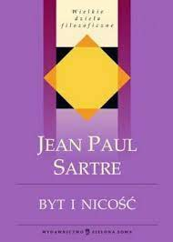

Byt i nicość

Powieść wydana w 1943r.
Jeszcze pięćdziesiąt lat temu Byt i nicość stanowił punkt odniesienia dla niemal każdego studenta filozofii, artysty, aktora, dziennikarza czy nawet działacza społeczno-politycznego. Biblia egzystencjalizmu, mroczny głos powojennej filozofii, końcowy przystanek wszelkiej idealistycznej metafizyki czy też dramatyczny opis przygód świadomości-w-świecie - to tylko kilka z ekscentrycznych określeń, kierowanych pod adresem dzieła, którego tak naprawdę nigdy dokładnie nie przeczytano. Jakkolwiek byśmy je dzisiaj oceniali, musimy przyznać, że nie ma chyba w historii literatury filozoficznej drugiej książki, która samym swym pojawieniem się wywołała takie poruszenie, tak żywo i plastycznie oddziałując na wyobraźnię wielu pokoleń.